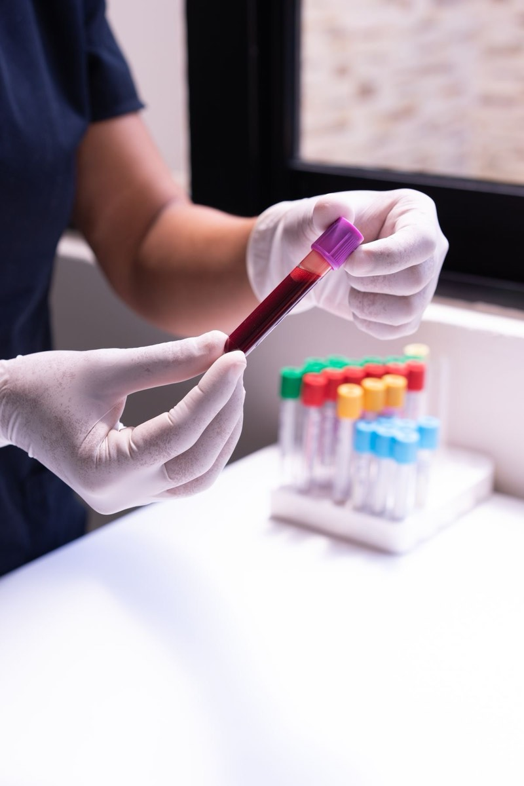
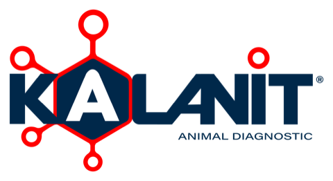
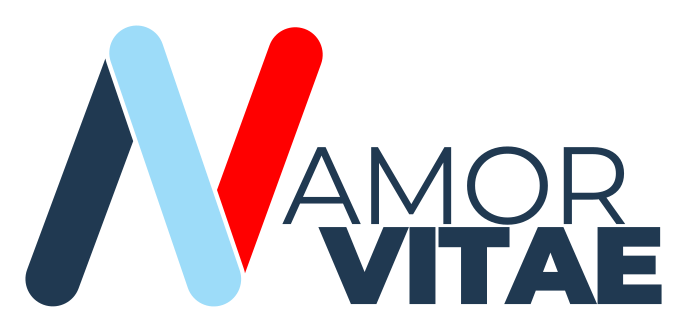
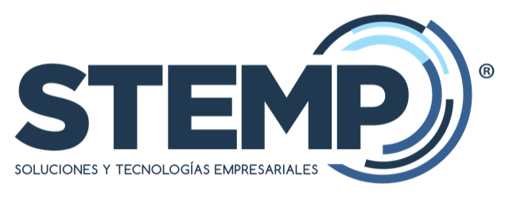

Laboratorio clínico veterinario
Exámenes de laboratorio para clínicas y médicos veterinarios. El reporte llega por Resultados Lab, con los valores de referencia para que el médico defina el siguiente paso.
Diagnóstico veterinario con Kalanit, traslado de muestras con Amor Vitae y equipos de diagnóstico en el punto de atención con STEMP Poct.
Para pedidos, solicitudes y cotizaciones, entre al sitio de cada unidad.


Exámenes de laboratorio para clínicas y médicos veterinarios. El reporte llega por Resultados Lab, con los valores de referencia para que el médico defina el siguiente paso.

Traslado de muestras biológicas, insumos y documentos desde la clínica veterinaria hasta el laboratorio, para Kalanit y para terceros. Cada solicitud queda registrada.

PoctEquipos e insumos para que la clínica tenga el resultado en la consulta, con el paciente presente. Despachos a todo el país.
Las tres unidades se complementan, pero cada una funciona por su cuenta.
La clínica pide el examen por el chatbot de WhatsApp de la Plataforma STEMP.
KalanitUn Operador recoge la muestra y la entrega en el laboratorio.
Amor VitaeEl laboratorio procesa la muestra y publica el reporte en Resultados Lab.
KalanitLas clínicas que prefieren hacer la prueba ellas mismas tienen equipos e insumos POCT.
STEMP PoctTeamtres reúne las tres unidades de negocio de Soluciones y Tecnologías Empresariales SAS. Atendemos sobre todo a clínicas veterinarias en Colombia, y STEMP Poct despacha a todo el país. Trabajamos con procesos sistematizados: las solicitudes de traslado entran por una plataforma propia y quedan registradas.
unidades con marca, sitio y canales propios
despachos de STEMP Poct a todo el país
plataforma propia para las solicitudes de traslado